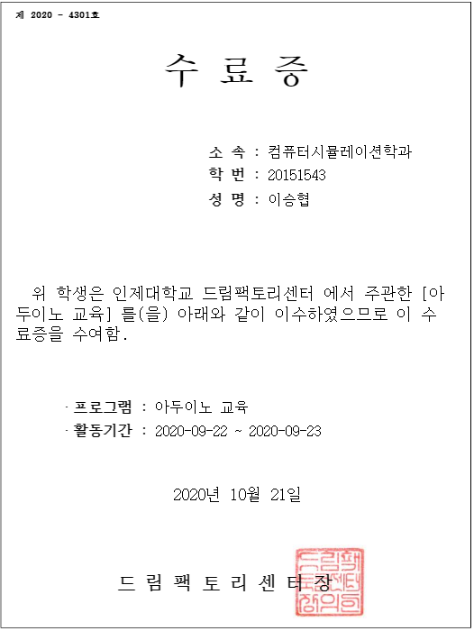
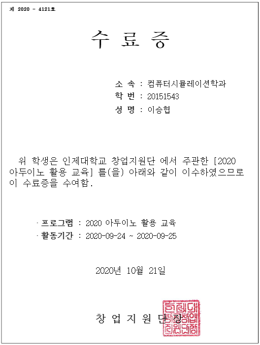

人
的
事
項

氏
名
フリガナ
イ スン ヒョプ
TEL
+82 010 3366 0651
英文
LEE SEUNG HYEOP
生年月日
960502
漢字
李昇協
性 別
男
年 齢
24歳
住 所
慶尙南道 昌原市 城山区 デアム路 22
lesh0502@yahoo.co.jp
履 歴 書
|
支援分野 |
IT(機械制御) |
基本給与 |
会社内規 |
|
人 的 事 項 |
|
氏 名 |
フリガナ |
イ スン ヒョプ |
TEL |
+82 010 3366 0651 |
||||
|
英文 |
LEE SEUNG HYEOP |
生年月日 |
960502 |
|||||||
|
漢字 |
李昇協 |
性 別 |
男 |
年 齢 |
24歳 |
|||||
|
住 所 |
慶尙南道 昌原市 城山区 デアム路 22 |
|||||||||
|
|
lesh0502@yahoo.co.jp |
|||||||||
|
学 歴 |
日字 |
出身校 |
専攻 |
卒業区分 |
単位 (平均) |
|
2015.03 ~ 2021.02 |
仁済大学校 |
コンピューターシミュレーション学科 |
卒業予定 |
4.30/4.5 |
|
|
2012.03 ~ 2015.02 |
昌原南高等学校 |
文科 |
卒業 |
|
|
兵 役 |
現役必 |
軍別 |
階級 |
兵科 |
服務期間 |
任官区分 (将校対象) |
免除事由 |
報勲対象 |
|
陸軍 |
兵長 |
小銃手 |
2016.01.12~2017.10.11 ( 21 )ヶ月 |
|
|
□ 対象 ■ 非対象 |
|
パソコン |
Excel |
Word |
PowerPoint |
外国語 |
会話 |
作文 |
読解 |
|
中 |
中 |
中 |
中 |
中 |
中 |
||
|
※ 語学名・点数 : JLPT( N2 )点 |
|||||||
|
活用 詳細 |
Excel |
Word |
PowerPoint |
|
表計算、関数、図形、チャート |
文書作成、編集、図表 |
アニメーション、グラフィック、図表、図形 |
|
|
業務すぐに可能 |
業務上活用可能 |
不得意 |
|
活動 詳細 |
期間 |
内容 |
機関 |
|
2020-09-22 2020-09-23 |
アドゥイノ教育 |
仁済大学ドリームファクトリーセンター |
|
|
2020-09-24 2020-09-25 |
2020 アドゥイノ活用教育 |
仁済大学校創業支援団 |
|
備考 |
アドゥイノ教育 |
アドゥイノ活動教育 |
|
資 格 事 項 |
種類・等級 |
発行元 |
発行日 |
備考 |
|
自動車運転免許証(1種) |
慶南地方警察庁 |
2015.01.05 |
取得 |
|
|
日本語能力試験(N2) |
日本国際教育支援協会 |
2016.08.21 |
取得 |
|
|
COS 2級 |
YBMNET |
2020.09.26 |
取得 |
自 己 P R
|
成長 過程 |
【 あきらめずに努力すればかなえられる 】 高校卒業まで文系だった私は、コンピュータに関連する情報と知識がなくて、大学に行った学生でした。また、高校在学中に無学な物理学と修理科目を大学に入学して初めて、その科目を接しするには困難がありました。文系という理由だけで恐怖を感じるようになって進学放棄という考えをしました。 |
|
性格 長・短所 |
【 目標意識と記録の重要性 】 私は忍耐、柔軟な思考、目標意識の強みを持っています。私は大学に入学して高校生の時無学な科目がありました。初めて接した科目について放棄するより、誰が分かってくれなくてもやるべきこと、成果を達成して認められる学生になりたい目標がありました。絶えず熱心にする姿を失うことなく、学期が経つにつれ、周囲から私を見つけることが多くなっただけでなく、成果達成するために認められました。しかし、時には目標意識が強すぎて目標を必ず成し遂げなければならないという考えに一つのことに集中すれば、他のものを忘れる時がありました。だから、私は目標生じたとき、私の欠点を補完するために、メモして記録する習慣を持つようになりました。この習慣を介して周りを見るようになって、同時に目標も成し遂げることができる一挙両得の効果を得ることができました。私はいつも誠実さと勤勉の努力は、自己の発展の土台となり、他人に助けを与えることができると考えています。これらの第長所と短所を連携させて私を必ず必要とする業務をしたいです. |
|
大学 生活 |
【 ECU Controller製作 】 Arduinoを使用して、ハードウェアとソフトウェアの接続プロジェクトに参加して、RPMと冷却水の温度、電圧などを表示するエンジンコントローラを作った経験があります。ほとんどECU Controllerは、技術を使用している技術者や専門家に限定されて使用されるため、一般の顧客対象としても、簡単にコントローラを利用することがあればどうだろうかという疑問で作り始めました。 |
|
支援 同期 / 入社 後 抱負 |
【 最高の専門家 】 私はプログラミング職務で最高の専門家になるため、入社後の組織に対する理解を深め、グループ文化に適応するなど、責任感を基に業務を習得し、お客様の環境に合わせた最適のシステムを効率的にサポートいたします。 |
|
保有技術 |
|
[C/C#] Unityを利用したゲーム制作 -Unityに必要な関数理解(transform関数、GameObject関数、Input関数、delta関数など)
[HTML/CSS] -ChromeベースのHTMLコーディング -CSSを利用したStyleSheet作成
[Python] Flaskを利用したWebホームページ制作 - urlib.requestとBeautifulSoupを用いたクローリング - BootStrap 使用 - SQLite3を利用したデータベースの活用 - ユーザー同士のフォローとアンフォロー機能を実現 - md5ライブラリを利用したgravatar製作 -werkzeug.セキュリティを利用したHashing処理
Arduinoを利用したデータの視覚化 - 温度、湿度、照度のデータをリアルタイムで視覚化処理 - Arduino IDE, MongoDB, Node.js利用 - JavaScript, C/C++ 使用
Arduinoを利用したECU Controller製作 - RPM, Voltage,Cooling Water,OliPress 画面構成 - dial, button 形式 RPM 制御の実装 - MCP2515を用いたCAN通信データ入出力 - J1939標準規格に合わせて製作
|